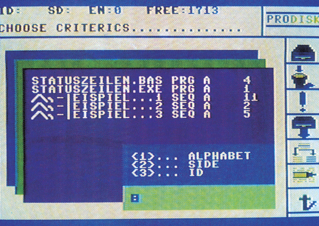

ProDisc — eine professionelle Diskettenverwaltung
Diese sehr komfortabel zu bedienende Diskettenverwaltung gibt Ihnen die Möglichkeit, bis zu 1745 Programme auf optimalste Weise zu erfassen.

Keine Diskettenverwaltung wie die üblichen, sondern eine,- die aus dem Rahmen fällt, ist unsere Anwendung des Monats. Sie vereinigt die folgenden Extras unter einer komfortablen Benutzeroberfläche:
- Keine lästige Eingabe von Befehlen oder Auswahl aus unübersichtlichen Menü-Monstern mehr. Es wird einfach aus einer Leiste von ansprechenden Bildsymbolen die gewünschte Funktion herausgepickt;
- Kapazität von über 500 Diskettenseiten oder 1745 Programmnamen;
- Sortieralgorithmus nach verschiedenen Auswahlkriterien: Alphabet, ID und Seite;
- Unterschiedliche Delete-Modi: In- und Exclude;
- Mehrfacheditierung;
- Druckroutine für verschiedene Drucker anpaßbar;
- Gute Übersichtlichkeit durch Window-Technik;
- Sehr schnelle Suchroutinen, um bestimmte Programmnamen herauszufinden;
- Automatisches Einsortieren aufzunehmender Titel in die Hauptdatei;
- Das Programm liegt komplett im Bereich ab $A000 aufwärts, so daß kein Basic-Speicher »verbraten« werden muß.
Außerdem besteht noch die Möglichkeit, während des Einlesevorganges den Namen und die ID der eingelegten Diskette zu verändern.
Die Aufnahme der Disketten erfolgt auf denkbar einfachste Weise: Man muß nur eine Diskette in die Floppy einlegen, auf eine Taste drücken, und das ganze Directory wird in den Speicher gelesen. Nach sehr kurzer Zeit erscheint ein Fenster, das sich selbst erklärt (Name/ID der Diskette ändern). Ist diese erste Aufnahme-Phase abgeschlossen, stellt das Programm die eingelesenen Programmtitel in diversen Windows dar, von wo aus sie nun durch Druck der
Return-Taste übernommen oder editiert werden können.
Auch die anderen Unterpunkte sind gleichermaßen einfach und effektiv zu benutzen. ProDisc ist ein Diskettenverwaltungs-Programm, mit dem sicher auch Sie gerne arbeiten werden.
(Frank Müller/dm)Mit dieser über eine Benutzeroberfläche gesteuerten Diskettenverwaltung können Sie bis zu 1745 Programme sehr komfortabel verwalten und ausgeben.
Nicht schon wieder eine Diskettenverwaltung, werden Sie jetzt vielleicht denken. Doch wird diese Anwendung Ihre Meinung garantiert ändern.
Etwa durch die komfortable Bedienung, die durch eine »Benutzeroberfläche« realisiert wurde. Dies bedeutet, daß Sie keine umständlichen Befehle mehr eingeben müssen, sondern nur noch auf ein »Icon« (Bildsymbol) deuten, das daraufhin die betreffende Funktion ausführt. Ganz zu schweigen von der Datenmenge, die sich damit erfassen läßt (1745 Programmtitel auf einmal im Speicher, da sich das Hauptprogramm in von Basic aus nicht erreichbaren Speicherbereichen befindet). Weitere Pluspunkte: Sortieralgorithmus nach diversen Kriterien, unterschiedliche Delete-Modi, Mehrfacheditierung, Druckerroutine anpaßbar und gute Übersichtlichkeit durch Window-Technik. Alles in allem ein sehr brauchbares Werkzeug für all jene, die sich bei ihren Disketten nicht mehr zurechtfinden.
Das Programm
Nachdem Sie das Ladeprogramm gestartet haben, werden die noch fehlenden Routinen eingelesen und anschließend das Programm aktiviert. Es erscheint das immer zu sehende Hauptmenü mit der am rechten Rand befindlichen Symbol-Leiste. Desweiteren ist am oberen Bildschirmrand noch ein Statusfeld zu sehen, auf das später noch eingegangen wird, sowie ein blinkender Auswahl-Pfeil.
Die Symbol-Leiste
Die rechts befindlichen Bildsymbole, die mit den Cursortasten angewählt und durch Drücken von < RETURN > aktiviert werden, haben folgende Bedeutung (von oben nach unten):
- Icon 1 (Diskettenzugriff): Hier können Sie Datensätze laden, speichern und mit dem Speicherinhalt vergleichen (verifizieren). Die Datei wird automatisch unter dem Namen »CCT-DATA-FI« gespeichert (ein bestehender Eintrag wird überschrieben). Fehler im Bus-Betrieb, an den Benutzer gerichtete Aufforderungen oder Anfragen zeigt das Programm automatisch in der Kommentarzeile (……) im Statusfeld an. Rückkehr in das Hauptmenü mit < ← >.
- Icon 2 (Löschen): Das Löschen erfolgt über drei Kriterien (Alphabet, ID und Seite). Dabei ist der Einsatz des Zeichens »£« als Joker möglich.
Um zum Beispiel alle Programmnamen zu löschen, die mit »SI…« beginnen, gibt man nach Drücken der Alphabet-Taste (1) folgendes ein: »SI£«, gefolgt von < RETURN >. Dies ist der INCLUDE-Modus.
Zusätzlich können Sie auch den EXCLUDE-Modus wählen (siehe Icon 7). Nun würden alle Programme außer »SI…« gelöscht.
- Icon 3 (Listen der Datei): Es gelten die selben Kriterien wie im Delete-Modus (Icon 2). Um die gesamte Datei zu listen, drückt man einfach die Alphabet-Taste, gefolgt von < RETURN >. Durch Drücken von < SPACE > wird der nächste Programm-Name gelistet.
Soll ein Name verändert werden, so gibt man statt <SPACE> einfach <E> wie Editieren ein. Nun können Sie sämtliche Angaben ändern. Die Windows können jederzeit mit der < *- >-Taste verlassen werden.
- Icon 4 (Diskette aufnehmen): Von der eingelegten Diskette werden zuerst Name und ID gelesen und angezeigt. Diese Daten sind durch Drücken von < RETURN > editierbar. Die geänderten Daten schreibt das Programm anschließend auf die Diskette zurück und liest die neuen Daten nochmal ein.
Wollen Sie den Header nicht ändern, so fragt Sie das Programm nach Eingabe von < N > (Nein) nach der Diskettenseite. Hier geben Sie bitte <A > für die Seite, auf der sich das Disketten-Etikett befindet und <B> für die Rückseite ein.
Nach der Seitenwahl werden nun die Programmtitel gelistet. Durch die Cursor-Tasten lassen sich die Einträge seitenweise bis zum Ende des Directories listen. Mit <CLR/HOME> gelangt man wieder zum Anfang des aktuellen Windows. Durch < RETURN > wird der Eintrag aufgenommen (auf schon bestehende Einträge weist die Kommentarzeile hin).
In der Statuszeile lassen sich nun ID, die Seite, die Zahl der auf der Diskette enthaltenen Einträge und die Anzahl der noch freien Einträge ablesen. Auch hier besteht die Möglichkeit, mit der < E > -Taste die Programm-Namen noch vor dem Aufnehmen zu editieren. Ein Hinweis am Rande: Gelegentlich tritt der Fall auf, daß Sie mit der Cursor-Auswahl aus dem Bildschirm hinaus und durch den Speicher fahren könnten. Probieren Sie es lieber nicht aus, sondern fahren Sie mit dem Cursor wieder nach oben. Es könnte ein Teil der Datei zerstört werden.
- Icon 5 (Sortieren): Zur Auswahl stehen drei Sortier-Kriterien: Alphabet, ID und Diskettenseiten (Wartezeiten sind nicht auszuschließen). Zusätzlich ist es möglich, über Autosort (siehe Icon 7) die Einträge automatisch nach Aufnahme alphabetisch sortieren zu lassen.
- Icon 6 (Drucken): Es wird die komplette Datei im aktuellen Zustand ausgedruckt. Wahlweise geschieht dies mit oder ohne CBM-Zeichensatz und Einzelblatt- beziehungsweise Endlosausdruck (siehe Icon 7).
- Icon 7 (Ende): Verlassen des ProDisc-Systems oder Ändern der Parameter. Durch Drücken der Anfangsbuchstaben der Optionen werden die jeweiligen Flags gesetzt oder gelöscht (ausgefüllte Kreisfläche bedeutet gesetzt (•), Kringel gelöscht (o).
- CBMZ.SATZ: Wahlweise Ausdruck mit dem CBM-Zeichensatz für CBM-Drucker (•) oder normalem Zeichensatz (o) für Fremddrucker(Epson, …).
- EZ-BLATT: Das Programm wartet entweder bei jedem fertigen Blatt, bis ein neues eingelegt wird (•) oder druckt ohne Unterbrechung (o).
- INCLUDE: Löschen nach bestimmten Kriterien (siehe Icon 2), normalerweise Include (•).
- AUTOSORT: Ist diese Funktion aktiv (•), so sortiert das Programm neue Einträge gleich nach der Übernahme ein.
Allgemein gilt: Die jeweiligen Unterprogramme und Windows können jederzeit durch Druck der < *- >-Taste verlassen werden.
Eingabehinweise
Bitte geben Sie die Listings 1 bis 8 jeweils mit dem MSE ein und speichern Sie sie auf Diskette.
Zum Starten laden Sie bitte das Ladeprogramm »ProDisc« (Listing 1) und aktivieren es mit RUN. Anschließend werden die anderen Files nachgeladen und automatisch gestartet.
Noch etwas: Bitte drücken Sie während des Betriebs nicht die Restore-Taste, das Programm könnte abstürzen.
(Frank Müller/dm)